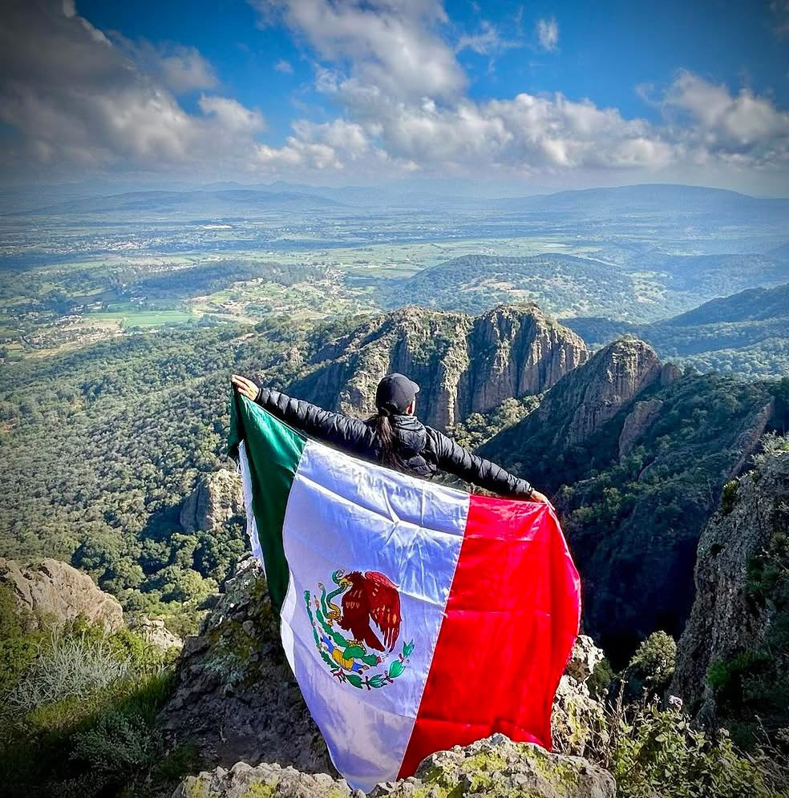
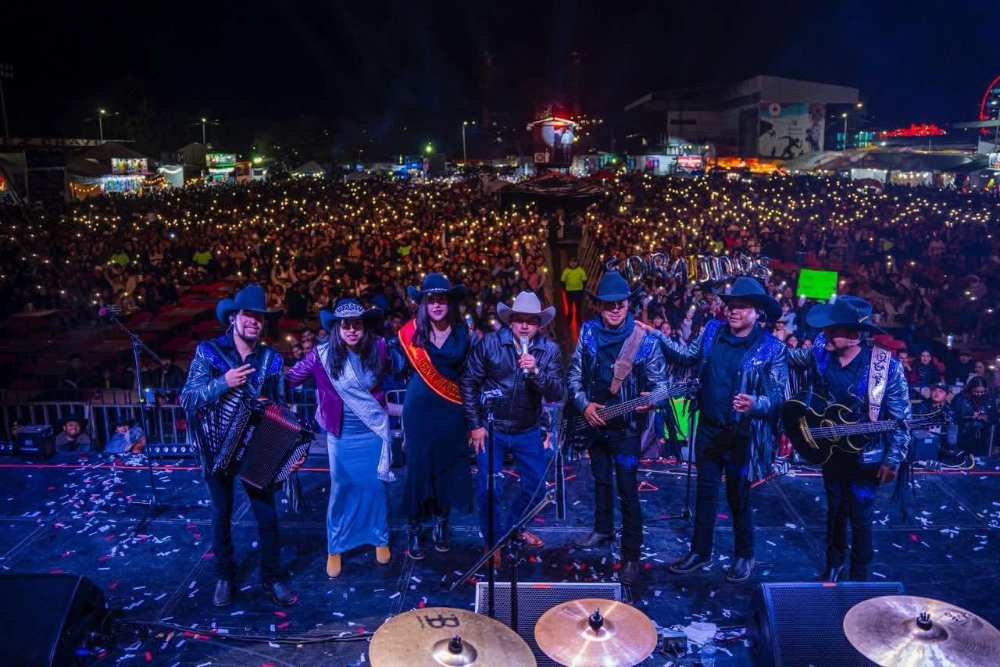

Atractivos Turísticos
Las Peñas de Dexcani, el Santuario del Señor del Huerto, la Parroquia de San Pedro y parques naturales.
Explorar atractivos →Naturaleza, historia, tradición y riqueza cultural en el corazón del Estado de México.
Desarrollo en Armonía | Tierra de Maíz, Cultura y Aventura
Jilotepec se distingue por su majestuosa naturaleza, el Parque Ecoturístico Las Peñas de Dexcani, sus templos históricos, exquisita gastronomía y tradiciones festivas que acogen con calidez a todos sus visitantes.

Conoce los pilares que hacen de Jilotepec un destino inolvidable
Las Peñas de Dexcani, el Santuario del Señor del Huerto, la Parroquia de San Pedro y parques naturales.
Explorar atractivos →
Feria Regional del Maíz, Fiestas Patrias, Convocatoria Reina Turismo y celebraciones patronales.
Ver cartelera →.jpg)
Sabor auténtico: barbacoa de borrego, consomé, ximbó, platillos de maíz y pulque artesanal.
Descubrir sabores →Jilotepec se encuentra ubicado estratégicamente al norte del Estado de México.